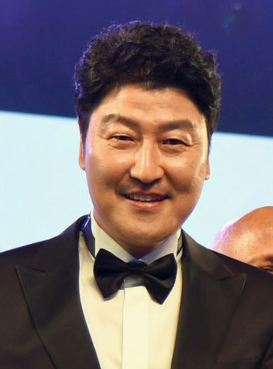

Жюри
Спайк Ли, режиссёр (США) — председательАмериканский кинорежиссёр, продюсер, сценарист и актёр.
Ли совершил свой режиссёрский дебют с фильмом «Ей это нужно позарез» (1986), и с тех пор снял такие фильмы, как «Делай как надо!» (1989), «Малкольм Икс» (1992), «25-й час» (2002), «Не пойман — не вор» (2006), «Чирак» (2015) и «Чёрный клановец» (2018).
Ли совершил свой режиссёрский дебют с фильмом «Ей это нужно позарез» (1986), и с тех пор снял такие фильмы, как «Делай как надо!» (1989), «Малкольм Икс» (1992), «25-й час» (2002), «Не пойман — не вор» (2006), «Чирак» (2015) и «Чёрный клановец» (2018).
Мати Диоп, актриса и режиссёр (Франция, Сенегал)
Французская актриса и кинорежиссер, снявшаяся в 2008 году в фильме «35 рюмок рома».
В 2019 году дебютировала как режиссёр с фильмом "Атлантика" и стала первой чернокожей женщиной-режиссером, претендующей на высшую награду Каннского кинофестиваля.
В 2019 году дебютировала как режиссёр с фильмом "Атлантика" и стала первой чернокожей женщиной-режиссером, претендующей на высшую награду Каннского кинофестиваля.
Милен Фармер, певица и автор песен (Франция)
Французская певица, композитор, актриса и поэтесса.
Одна из самых известных современных французских исполнительниц популярной музыки не только во Франции, но и во всём мире.
Как режиссёр Кампийо дебютировал в 2004 году с фентезийным фильмом «Вернувшиеся».
Одна из самых известных современных французских исполнительниц популярной музыки не только во Франции, но и во всём мире.
Как режиссёр Кампийо дебютировал в 2004 году с фентезийным фильмом «Вернувшиеся».
Мэгги Джилленхол, актриса, продюсер, сценарист и режиссёр (США)
Aмериканская актриса, режиссёр, сценарист и продюсер.
Обладательница премии «Золотой глобус», а также номинантка на «Оскар» и «Эмми».
Обладательница премии «Золотой глобус», а также номинантка на «Оскар» и «Эмми».
Джессика Хаузнер, режиссёр, продюсер и сценарист (Австрия)
Австрийский кинорежиссёр, сценарист, продюсер и монтажёр.
Закончила Венскую киноакадемию (1991—1994). Работала в сценарной группе фильма Михаэля Ханеке Забавные игры (1997). В 1999 году вместе с Барбарой Альберт, Антонином Свободой и Мартином Гшлахтом основала продюсерскую компанию кооп99.
Закончила Венскую киноакадемию (1991—1994). Работала в сценарной группе фильма Михаэля Ханеке Забавные игры (1997). В 1999 году вместе с Барбарой Альберт, Антонином Свободой и Мартином Гшлахтом основала продюсерскую компанию кооп99.
Мелани Лоран, актриса, режиссёр и сценарист (Франция)
Французская актриса, режиссёр, певица.
В период с 1999 по 2009 год снялась в 20 фильмах. В 2008 году выступила в роли режиссёра и сценариста короткометражного эротического фильма «A ses pieds» (рус. К его ногам), который был показан на французском телеканале Canal+.
В период с 1999 по 2009 год снялась в 20 фильмах. В 2008 году выступила в роли режиссёра и сценариста короткометражного эротического фильма «A ses pieds» (рус. К его ногам), который был показан на французском телеканале Canal+.
Клебер Мендонса Фильо, режиссёр, продюсер и сценарист (Бразилия)
Бразильский режиссер, сценарист и критик.
Дебютировал как режиссер с драмой «Соседние звуки» (2012). В 2016 году на Каннском фестивале был представлен второй полнометражный фильм режиссера — «Водолей». Он стал единственной латиноамериканский лентой, номинированной на Золотую пальмовую ветвь.
Дебютировал как режиссер с драмой «Соседние звуки» (2012). В 2016 году на Каннском фестивале был представлен второй полнометражный фильм режиссера — «Водолей». Он стал единственной латиноамериканский лентой, номинированной на Золотую пальмовую ветвь.
Тахар Рахим, актёр (Франция)
Французский актёр алжирского происхождения,
лауреат премии «Сезар» 2010 года за лучшую мужскую роль в фильме «Пророк».

Сон Кан Хо, актёр (Республика Корея)
Южнокорейский актёр.
Наибольшую известность получил благодаря фильмам: «Объединённая зона безопасности» (2000), «Сочувствие господину Месть» (2002), «Воспоминания об убийстве», (2003), «Вторжение динозавра» (2006), «Жажда» (2009), «Паразиты» (2019).
Наибольшую известность получил благодаря фильмам: «Объединённая зона безопасности» (2000), «Сочувствие господину Месть» (2002), «Воспоминания об убийстве», (2003), «Вторжение динозавра» (2006), «Жажда» (2009), «Паразиты» (2019).